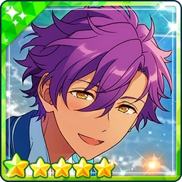
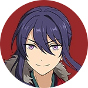
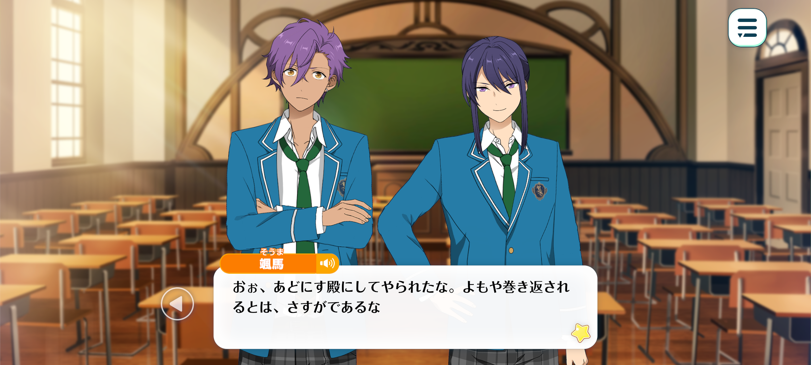
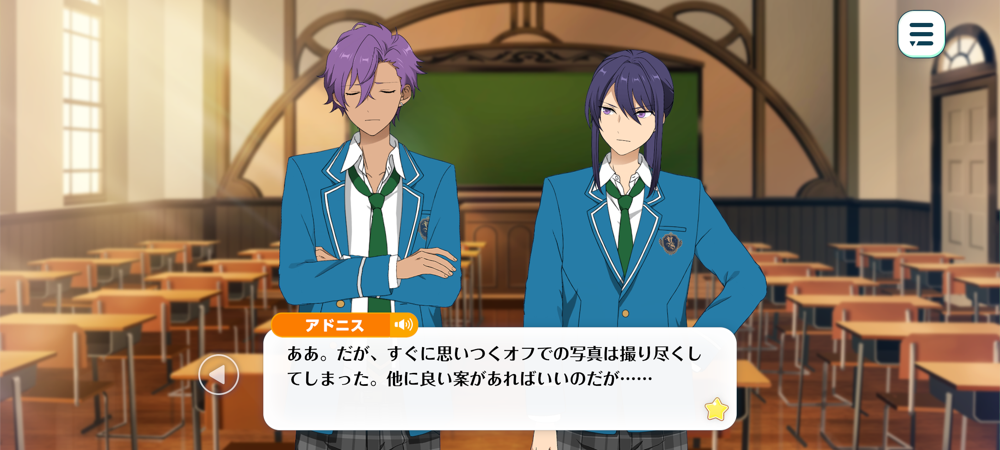

May My Voice Reach You
Idol Story (FS2)



Season: Winter

Adonis: Kanzaki, isn't this inoshikachō?[1]
Souma: Oh, well done, Adonis-dono! A most impressive victory!
Adonis: It was nothing. I did not expect that to happen myself. I simply happened to choose the right cards.
You have one more combination, do you not? If I remember correctly, you were aiming for sankō, correct?
Souma: Indeed! Fufu, I am glad to see that Adonis-dono has remembered the rules of Hanafuda ♪
Adonis: You said it would be easier to remember them by associating each card with its illustration. That is how I managed to memorise inoshikachō.
Souma: Umu! Before I knew it, your skills had improved by leaps and bounds. Teaching you this game was certainly a worthwhile endeavour.
Furthermore, I am glad to have had the opportunity to play with a friend. Thank you for taking the time to learn.
Adonis: I should be the one thanking you.
Although I struggled to memorise the cards, you patiently continued to teach me. It is thanks to you that I can play now.
This time, I did not achieve victory through my own efforts alone. I won because you were here. In other words, this victory belongs to both of us...
Souma: A victory for both of us? I see! I believe the English expression for that is... a "wind wind"?
Adonis: Ah, of course. It is called a "win-win situation".
Souma: Fufu. What a very Adonis-dono way of looking at things ♪
Adonis: Is that so? If you would like, shall we play another game?
Souma: I would gladly accept, but I find myself a little concerned about Anzu-dono.
Was she not hoping to speak with you about your Feature Live today?
Adonis: We had arranged to meet after school. However, Anzu appeared to be busy, and I was unable to find her to speak with her. It is rather frustrating...
I sincerely hope I have not caused her any trouble. I shall send her a message on HoldHands, just to make sure.
Souma: ...There is no need for that as she has approached us first.
Adonis: Hm? Anzu? You did not mind waiting for us while we played Hanafuda?
Souma: There is no need to apologise, Anzu-dono. I, too, enjoy spending time with Adonis-dono.
Adonis: Besides, you seem to have hurried here. Please do not worry. Take a moment to catch your breath.
Are you feeling better now? If you would like to discuss the Feature Live, please go ahead. I do not mind.
Is this... the pamphlet containing the photographs you took earlier? You just need my approval?
Souma: Oh? May I have a look?
I know not whether my assistance is needed, but if it concerns Adonis-dono's live, I would gladly lend a hand.
There are quite a number of them. Let us take a closer look... Is this you practising with UNDEAD? And this one shows you running with the track and field club.
Adonis: And this one was taken backstage at the underground live house.
Hakaze-senpai suddenly pointed a camera at me, which caught me completely off guard. I believe this is what they call a "candid shot"?
I did not understand what that meant at first, but Oogami and my senpais were kind enough to explain it to me. I was very grateful. Of course, Anzu helped me understand as well.
Will these photographs be included in my pamphlet?
If there are no objections, I think that would be fine.
Souma: Oh? May I have a look?
Adonis: There are so many good photographs that you cannot decide which ones to choose? And that is why you would like to hear my opinion...
Fumu... This is rather difficult.
A candid photograph is one taken when an idol is not performing, correct? In that case, I believe any of these would be suitable.
As well as that, many of the photos turned out quite nicely, and I also like them. I don’t know if I’ll be able to decide which ones to use at this very moment.
Hm? If I decide on the concept for the pamphlet first, it will become easier to choose which photographs I like best?
What sort of pamphlet do I want it to be...? That is a difficult question.
This is the first time I have ever given it much thought.
I will need a little more time before I can give you an answer... I am sorry, Anzu. You took the time to meet with me, yet I have not been able to give you a proper answer.
You would like to continue talking for a while longer? If you are able to learn more about me, surely the concept will naturally reveal itself...?
Please, do not hold back. Rather, I would appreciate your help.
...However, simply talking about it will not be enough, will it?
I personally think all of these photographs are wonderful.
But if we cannot decide which ones to use, would it not be better to take some new ones?

Souma: However, if you were to decide on a concept first, you could choose the photographs you have already taken to match it. Nevertheless, I understand your uncertainty, Adonis-dono.
Adonis: Thank you. However, that is all I have been able to come up with. I have yet to think of an alternative.
Souma: In that case, if I may make a suggestion, Adonis-dono... Why not invite Anzu-dono to the beach?
Adonis: I see. If we were to have a photoshoot at the beach, we might be able to take some photographs unlike any we have taken before.
Hm? You wish to know whether I was planning to visit the beach anyway?
To tell you the truth, I promised Kanzaki that we would take a walk along the beach behind the school during lunch tomorrow.
Souma: I sometimes visit the beach to pay my respects to the recently departed Shinkai-dono.
Originally, I had intended to go with Sengoku-dono. However, he received an unexpected work assignment, and we were forced to postpone our plans.
When Adonis-dono heard of this, he kindly offered to accompany me ♪
Adonis: I enjoy the ocean as well, and I thought that accompanying Kanzaki might give me the opportunity to learn something new.
Anzu, if you do not mind, would you care to join us?
...Very well, then. Let us meet tomorrow during lunch.
Souma: Fufu, a sudden wave of joy has washed over me! I look forward to your company tomorrow, Anzu-dono.
- they’re playing a traditional Japanese card game called Hanafuda. inoshikachō is a high scoring combo of cards of the boar, deer, and butterfly cards
- three 20-point scoring cards